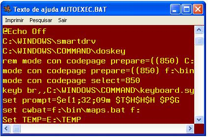
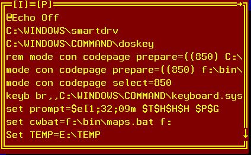

Exibição de texto de ajuda.
Help FILE
arquivo
[ TITLE
título-da-janela
]
[ LINE linha
]
[ COLUMN coluna
]
[ WIDTH colunas
]
[ HEIGHT linhas
]
[ TOP ]
[
SPOOL ]
[
TIMEOUT-ENABLE
| TIMEOUT-DISABLE
]
[ TIMEOUT-RETURN ;
retorno-tempo-limite-decorrido
]
arquivo
Nome do arquivo
texto a ser exibido.
Texto de até 76 caracteres para o título da janela.
Linha de posicionamento da janela.
Coluna de posicionamento da janela.
Largura da janela em colunas
Altura da janela em linhas.
Indica que a primeira linha do arquivo texto a ser exibido deve ser fixada na primeira linha da janela, atuando como um cabeçalho para a lista.
Indica que a função de impressão do help deve utilizar o spool do gerenciador de aplicações. Em ambiente unix. esta ação será tomada mesmo se não declarada.
Habilita o término por tempo
de ociosidade decorrido. A opção default será
automaticamente selecionada pelo sistema em função do
limite de ociosidade declarado na configuração
TIMEOUT-DISABLE
A intervenção do usuário será obrigatória. O processamento só prosseguirá quando o usuário fechar a janela.
retorno-tempo-limite-decorrido
Variável que receberá o retorno indicativo da ocorrência de limite de tempo decorrido (1 ou zero) caso o usuário tenha selecionado uma opção manualmente.
A acentuação do arquivo texto deve ser codificada com a página de código 850, os processadores de tela se encarregam de traduzir para o codificação apropriada à plataforma de execução.
|
Codificação COBOL |
|
EXEC COBOLware
Help |
|
Efeinto no modo gráfico |
|
 |
|
Efeito no modo texto. |
|
 |